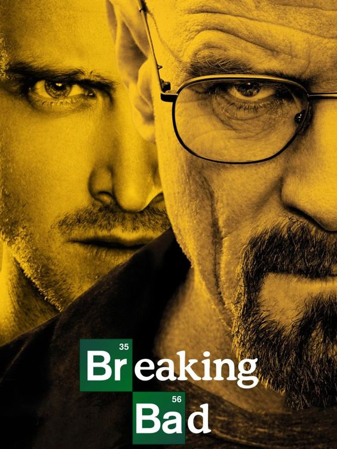

Breaking Bad

Summary
Breaking Bad is a crime drama television series created by Vince Gilligan. It follows Walter White, a high school chemistry teacher turned methamphetamine manufacturer, and his former student, Jesse Pinkman, as they enter the drug trade.
Cast
- Bryan Cranston as Walter White
- Aaron Paul as Jesse Pinkman
- Anna Gunn as Skyler White
- Dean Norris as Hank Schrader
- Bob Odenkirk as Saul Goodman
- Jonathan Banks as Mike Ehrmantraut
Storyline
The series explores themes of crime, morality, and the consequences of actions, as Walter White descends into the criminal underworld while facing personal and professional challenges.
Episodes
- Season 1: 7 episodes
- Season 2: 13 episodes
- Season 3: 13 episodes